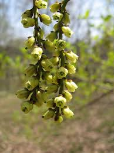

Stachyuraceae
Spike-tail Family
Stachyuraceae is a small, monogeneric family containing only the genus Stachyurus. These deciduous shrubs and small trees, native to East Asia, belong to the order Crossosomatales. They are best known for their distinctive, stiffly pendulous racemes of small, bell-shaped, often yellow flowers that appear before the leaves in late winter or early spring.
Overview
The Stachyuraceae family comprises a single genus, Stachyurus, with approximately 5 to 10 species of shrubs and small trees. These plants are native to East Asia, ranging from the Himalayas eastward through China to Japan. Phylogenetically, the family belongs to the small order Crossosomatales, positioned within the Malvid clade of the Rosids.
Stachyurus species are primarily valued in horticulture as ornamental plants, appreciated for their unique and elegant floral display. Their most striking feature is the production of numerous stiffly hanging, spike-like racemes crowded with small, bell-shaped flowers. These typically appear on the bare branches in late winter or very early spring, before the leaves emerge (precocious flowering), providing welcome early-season interest. The flowers are usually pale yellow or greenish-white.
Following the flowers, alternate, simple leaves develop, and later, small berry-like fruits mature. While not widely known outside of horticultural circles, Stachyurus represents a distinct lineage within the relatively obscure Crossosomatales order.
Quick Facts
- Scientific Name: Stachyuraceae
- Common Name: Spike-tail family (sometimes used)
- Number of Genera: 1 (Stachyurus)
- Number of Species: Approximately 5-10
- Distribution: East Asia (Himalayas to Japan)
- Evolutionary Group: Eudicots - Rosids - Malvids - Crossosomatales
Key Characteristics
Growth Form and Habit
Members are deciduous (rarely evergreen) shrubs or small trees, often with an open, somewhat spreading or arching branching pattern.
Leaves
Leaves are arranged alternately along the stems. They are simple, typically ovate to lanceolate in shape, with finely toothed (serrulate) margins. Small stipules are present at the base of the petiole, but they often fall off early (deciduous).
Inflorescence
The inflorescence is highly characteristic: stiffly pendulous (hanging), spike-like racemes, 5-15 cm long, bearing numerous small flowers. These racemes emerge from buds along the previous year's stems, typically before the leaves appear in late winter or early spring.
Flowers
Flowers are small, bell-shaped, radially symmetrical (actinomorphic), and usually bisexual (perfect), though sometimes functionally unisexual. Each flower is subtended by a bract and two smaller bracteoles. Key floral features include:
- Calyx: Consists of 4 sepals arranged in two opposite pairs (decussate). They are fused at the base and persistent.
- Corolla: Consists of 4 distinct (free) petals, or slightly fused at the base. They are concave or cup-shaped, forming the bell shape, and are typically pale yellow or greenish-white.
- Androecium: There are 8 distinct stamens, typically arranged in two whorls of 4. They arise from around the base of the ovary.
- Gynoecium: The pistil consists of 4 fused carpels (syncarpous). The ovary is positioned superiorly and is divided into 4 chambers (locules), each containing numerous ovules on axile placentas. A single short style terminates in a capitate (head-like) or slightly 4-lobed stigma. A nectar disc is generally absent or inconspicuous.
Fruits and Seeds
The fruit is a leathery or somewhat fleshy, indehiscent berry, typically small and globose or ovoid. It contains numerous small seeds embedded in pulp.
Chemical Characteristics
The family is not noted for particularly distinctive chemical compounds like potent alkaloids or glycosides found in some other families. Tannins are present.
Field Identification
Identifying Stachyurus species relies heavily on recognizing their unique flowering habit and floral structure:
Primary Identification Features
- Flowering Habit: The most diagnostic feature is the presence of stiffly pendulous, spike-like racemes bearing numerous small flowers that appear before the leaves emerge in late winter or early spring.
- Habit: A deciduous shrub or small tree.
- Flowers: Small, bell-shaped, typically pale yellowish. Note the specific floral formula: 4 sepals, 4 petals, 8 stamens. Ovary is superior.
- Leaves (when present): Alternate, simple, finely toothed (serrulate) leaves with small, often deciduous stipules.
- Fruit: Small, multi-seeded berry.
- Distribution: Native to East Asia (Himalayas to Japan); check if cultivated elsewhere.
Secondary Identification Features
- Raceme Appearance: Racemes are stiffly hanging, not lax or flexible.
- Sepal Arrangement: 4 sepals in 2 opposite pairs.
- Ovary Structure: 4 fused carpels (visible in cross-section or via stigma lobes).
Seasonal Identification Tips
- Late Winter / Early Spring: This is the key identification period due to the conspicuous precocious flowering on bare stems via pendulous racemes.
- Spring / Summer: Alternate, simple, serrulate leaves develop after flowering.
- Summer / Fall: Small berry-like fruits mature.
Common Confusion Points
- Corylopsis (Winter hazel): Also flowers before leaves on pendulous racemes. Differ in having flowers with usually 5 strap-shaped petals (or none), 5 stamens, inferior/semi-inferior 2-carpellate ovary, and fruit a woody capsule. Belongs to Hamamelidaceae (Saxifragales).
- Forsythia: Yellow flowers before leaves. Differ in having opposite leaves, 4 fused petals forming a tube with spreading lobes, only 2 stamens, and fruit a capsule. Belongs to Oleaceae (Lamiales).
- Salix (Willows): Catkins often appear before leaves. Differ completely in having highly reduced flowers without perianth in dense catkins, and fruit a capsule with cottony seeds. Belongs to Salicaceae (Malpighiales).
- Itea (Sweetspire): Racemes of small flowers. Differ in flowering with the leaves, having 5 petals and 5 stamens, and fruit a capsule. Belongs to Iteaceae (Saxifragales).
Field Guide Quick Reference
Look For:
- Deciduous shrub/small tree (E Asia)
- Pendulous racemes flower before leaves (late winter/spring)
- Flowers small, bell-shaped, yellow/greenish
- 4 sepals, 4 petals, 8 stamens
- Ovary superior
- Leaves (later) alternate, simple, serrulate, stipulate
- Fruit a small berry
Key Distinctions:
- Precocious flowering + Pendulous racemes
- Specific 4-4-8 floral formula
- Superior ovary (vs. Corylopsis)
- 8 stamens (vs. Forsythia, Corylopsis, Itea)
- Berry fruit (vs. capsule in others)
Notable Examples (Genus Stachyurus)
The family contains only the genus Stachyurus:

Stachyurus praecox
(No common English name)
Native to Japan, this is the most commonly cultivated species, valued for its very early spring display. It's a deciduous shrub growing 2-4 meters tall, producing abundant drooping racemes of pale, primrose-yellow, bell-shaped flowers on bare branches before the ovate, serrated leaves emerge.

Stachyurus chinensis
(No common English name)
Native to China, this species is similar to S. praecox but can be a larger shrub or small tree. Its flowering racemes may be longer, and flower color can vary slightly. Several cultivars exist in horticulture, sometimes selected for reddish young foliage.

Stachyurus himalaicus
(No common English name)
Found in the Himalayan region, this species often grows larger than S. praecox. It shares the characteristic early, pendulous racemes of yellowish flowers on bare stems. Leaf shape and size may differ slightly from other species.
Phylogeny and Classification
Stachyuraceae is a monogeneric family placed within the small order Crossosomatales. This order is part of the Malvid clade within the Rosids. Crossosomatales is a somewhat heterogeneous group of families, mostly containing shrubs and trees, whose relationship was largely uncovered through molecular phylogenetic studies.
The order includes only a handful of small families besides Stachyuraceae, such as Staphyleaceae (bladdernut family), Crossosomataceae (rockflower family), Guamatelaceae, Aphloiaceae, Geissolomataceae, and Strasburgeriaceae. Most families in the order are predominantly found in North America, making the East Asian distribution of Stachyuraceae biogeographically interesting. The exact relationships among these families within Crossosomatales are still areas of active research.
Position in Plant Phylogeny
- Kingdom: Plantae
- Clade: Angiosperms (Flowering plants)
- Clade: Eudicots
- Clade: Rosids
- Clade: Malvids
- Order: Crossosomatales
- Family: Stachyuraceae
Evolutionary Significance
The Stachyuraceae family is significant for:
- Representing Crossosomatales: Contributes to the diversity of this small, somewhat obscure rosid order.
- Unique Floral Syndrome: The combination of precocious flowering in stiffly pendulous racemes and the specific 4-4-8 floral formula is distinctive.
- Biogeography: Its East Asian distribution within an order largely centered elsewhere (especially North America) raises interesting questions about the historical biogeography and diversification of Crossosomatales.
- Monogeneric Status: Highlights a distinct evolutionary lineage represented by a single genus.